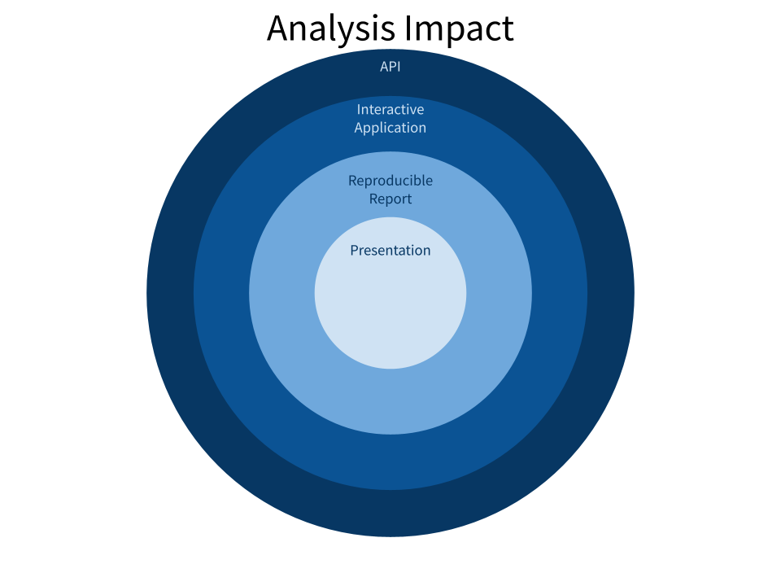
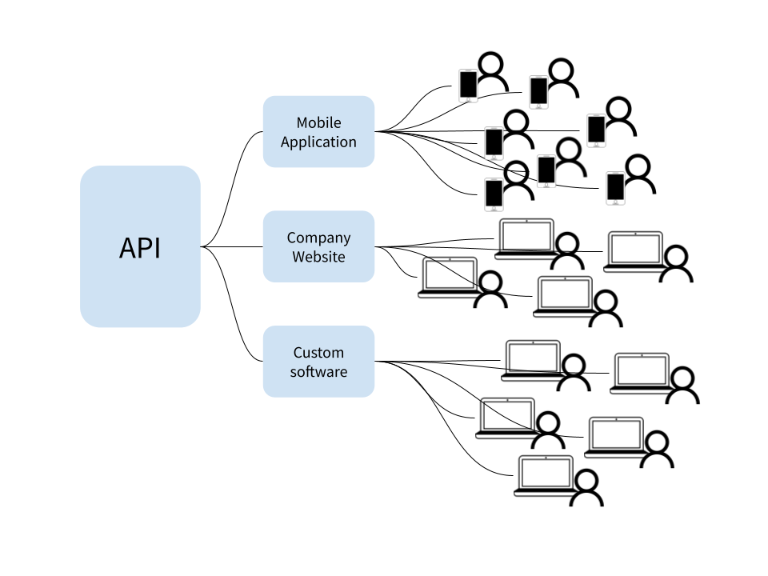
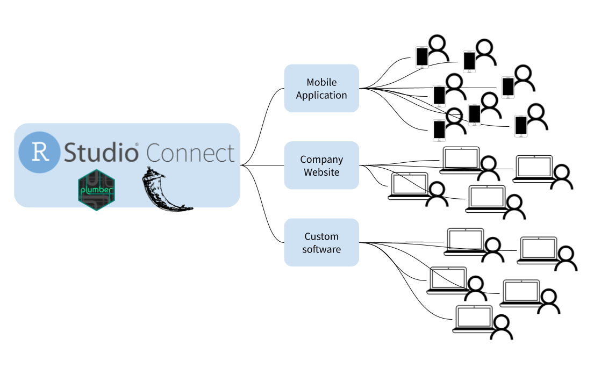

2021-05-04
Photo by Samuel Sianipar on Unsplash
Data Scientists and analysts work to constantly deliver valuable insights from data. In many cases, these individuals practice a Code First approach, using a programming language like R or Python to explore and understand data. Once an analysis reaches conclusion, it is important to carefully consider what happens next. Perhaps the analysis resulted in a complex machine learning model that can generate valuable predictions on new data. Or perhaps it resulted in some new business logic that can be implemented to improve efficiency. In any case, ensuring the longevity of analysis outcomes increases business value long after the original analysis concludes.
There are common, standard methods for distributing results and increasing the impact of a given analysis. Data scientists may choose one or more of several options:
In each case, the goal is to increase the potential impact of the analysis.The greater the reproducibility, interactivity and reach of the analysis, the greater the potential impact.

Let’s consider an example. Sofia works as a business analyst for a large SaaS company. She was recently assigned a project to analyze customer usage of the company platform to better identify customers at risk of churning. After careful analysis, Sofia determines the top 5 contributing factors to customer churn. At this point, she has learned something of value, and she can share those insights with business leaders via a presentation or email to help inform future decisions. However, this outcome has limited impact. What if Sofia created a reproducible report or a dashboard using Shiny or Dash to better understand the existing customer base and their risk factors? Now the analysis impact has dramatically increased.
As a result of Sofia’s analysis, the company wants to generate real time predictions for each customer. This will allow each customer interaction to be informed by the customers current level of risk. In order to achieve this, the work Sofia has done needs to be responsive and accessible in real time, from a variety of other tools and technologies. This is when creating an API can prove particularly useful.
APIs are, in their most basic form, a standardized way for computers to communicate with one another. Just as human communication is improved by a shared baseline or common language, APIs allow different digital platforms to communicate with one another. In the case of data analytics, APIs can empower real time interaction with statistical models and analysis outcomes. This enables other developers either inside or outside of an organization to integrate directly with and build upon work that’s already been done without the need for costly re-implementation.

The impact of a given analysis can often be measured by how accessible its results are. Slide presentations, reports, and interactive applications all increase analysis impact by distributing results to a wider audience. APIs can further increase impact by allowing other tools within the organization to quickly make use of analysis results. Unfortunately, many organizations stop short of creating these APIs and don’t realize the full impact potential of a given analysis.
This isn’t to say that every analysis should result in an API. When an analysis is expected to be short lived or exists only as a proof of concept, an API may be unnecessary. However, when other tools want to build upon the work done in an existing analysis, an API becomes a useful tool that enables quick integration.

RStudio Connect enables enterprise data science teams to quickly deliver analysis results to a wide variety of business stakeholders. In addition to supporting interactive applications and static reports, RStudio Connect can also be used to deploy and manage R and Python APIs, using the Plumber and Flask frameworks. To learn more: